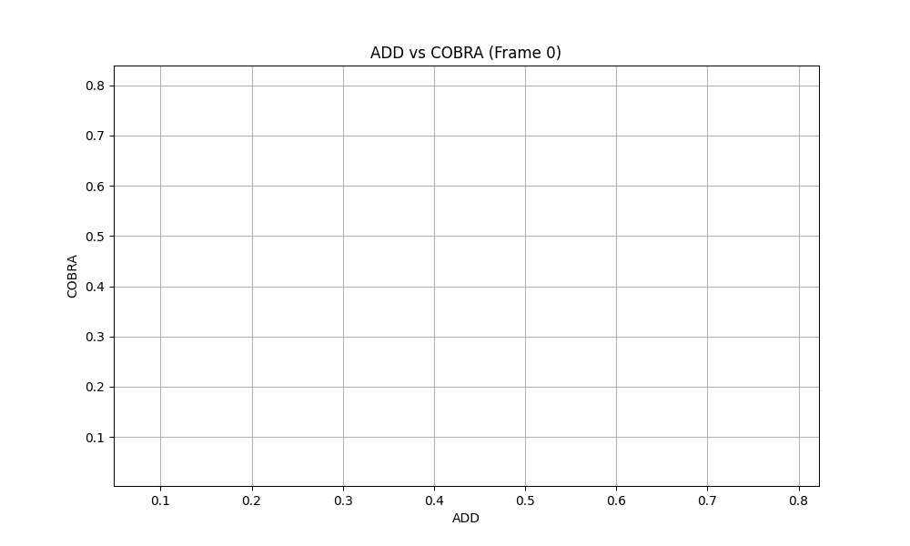
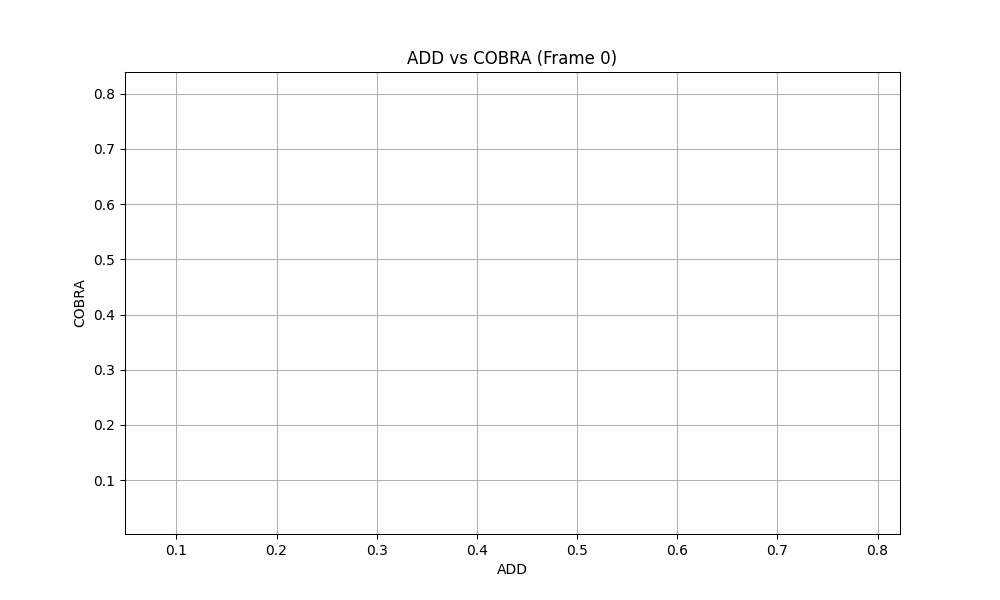

We present a generic algorithm for scoring pose estimation methods that rely on single image semantic analysis. The algorithm employs a lightweight putative shape representation using a combination of multiple Gaussian Processes. Each Gaussian Process (GP) yields distance normal distributions from multiple reference points in the object’s coordinate system to its surface, thus providing a geometric evaluation framework for scoring predicted poses. Our confidence measure comprises the average mixture probability of pixel back-projections onto the shape template. In the reported experiments, we compare the accuracy of our GP based representation of objects versus the actual geometric models and demonstrate the ability of our method to capture the influence of outliers as opposed to the corresponding intrinsic measures that ship with the segmentation and pose estimation methods.
The core idea of our method is to use putative 3D representations of objects (“templates”) that we are anticipating our classifier to detect and subsequently predict their pose. These classifiers typically ship with measures of self-assessed confidence that provide some indication of quality for the estimated pose. However, these quality measures bear the inherent bias of the selfassessment process and can therefore be misleading for the back-end application. To eliminate this bias, we resort to the use of lightweight object templates to validate the geometric consistency of the estimated object pose. Put differently, we utilize the pose estimate to generate a partial 3D reconstruction of the detected object and establish a confidence score by assessing the deviations of the reconstructed points from the template surface intrinsic measures that ship with the segmentation and pose estimation methods.
The core idea of our method is to use putative 3D representations of objects (“templates”) that we are anticipating our classifier to detect and subsequently predict their pose. These classifiers typically ship with measures of self-assessed confidence that provide some indication of quality for the estimated pose. However, these quality measures bear the inherent bias of the selfassessment process and can therefore be misleading for the back-end application. To eliminate this bias, we resort to the use of lightweight object templates to validate the geometric consistency of the estimated object pose. Put differently, we utilize the pose estimate to generate a partial 3D reconstruction of the detected object and establish a confidence score by assessing the deviations of the reconstructed points from the template surface intrinsic measures that ship with the segmentation and pose estimation methods.
| COBRA Template | Pose scoring |
|---|

Our confidence score does not compare against ground truth data, but it’s correlated with very reliable and widely used metrics such as ADD. We calculated the proposed confidence score and the ADD for the same set of images and perfomed a correlation analysis. As shown in the plot below ADD and COBRA are highly correlated. In fact, calculating the Spearman’s rank correlation coefficient we find values < -0.7 indicating a strong negative correlation.
 

@misc{sapoutzoglou2024cobra,
title={COBRA - COnfidence score Based on shape Regression Analysis for method-independent quality assessment of object pose estimation from single images},
author={Panagiotis Sapoutzoglou and George Giapitzakis and George Terzakis and Maria Pateraki},
year={2024},
eprint={2404.16471},
archivePrefix={arXiv},
primaryClass={cs.CV},
url={https://arxiv.org/abs/2404.16471}}
}